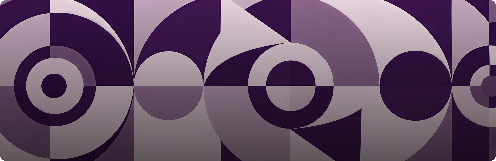
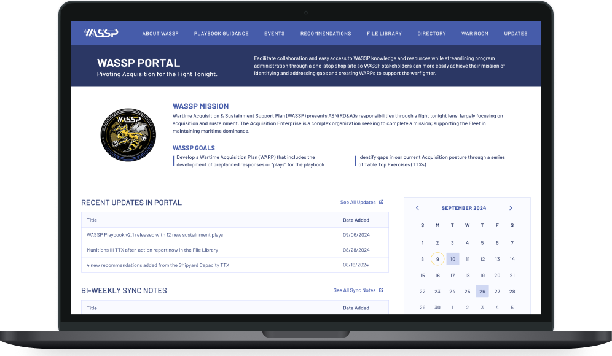
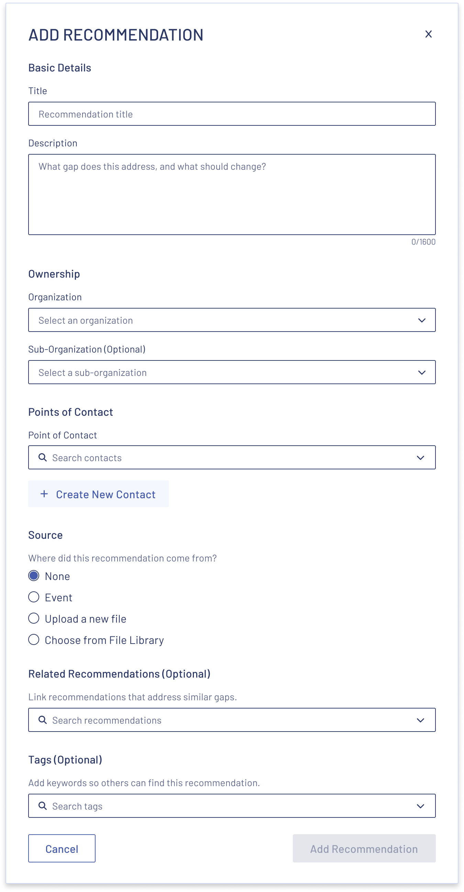
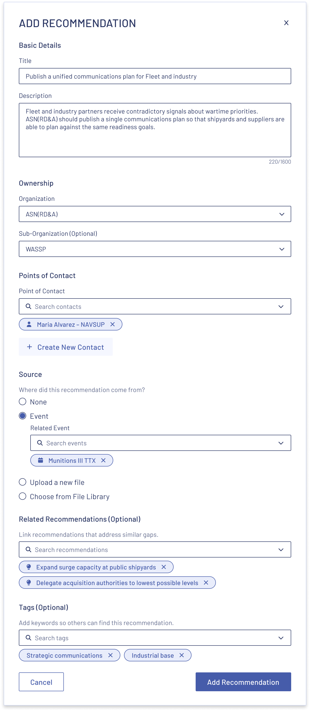
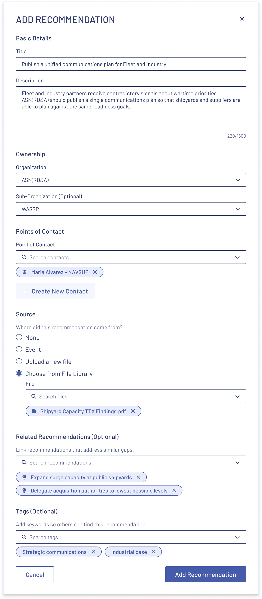
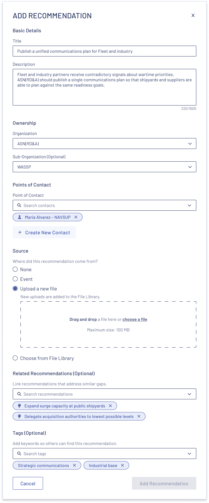
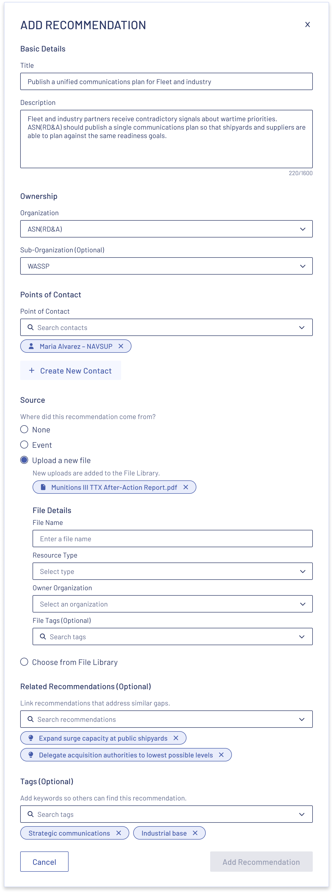
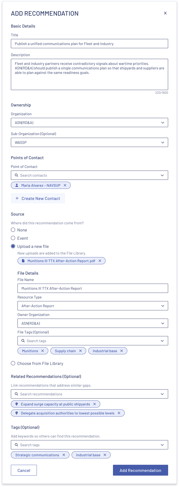

Directed discovery and design for an MVP knowledge management platform unifying siloed information across 30+ Navy acquisition organizations.
The Wartime Acquisition & Sustainment Support Plan (WASSP), under the direction of the Assistant Secretary of the Navy for Research, Development, and Acquisition (ASN(RD&A)), was tasked with preparing and improving the Navy's acquisition enterprise for wartime conditions. Our team partnered with WASSP to conduct tabletop exercises (TTXs) to surface insights and recommendations.
These events, which brought together industry, government, and military, produced a tremendous amount of data that became increasingly difficult to manage and make decisions from as the program scaled. At the ASN(RD&A) level alone, we were conducting about one TTX a quarter for several years, with each surfacing anywhere from 5 to 10 recommendations — in addition to the TTXs conducted at the SYSCOM level, which were producing insights at a comparable rate.
One report could be easily enough understood in isolation, but how was the Navy to make sense of it in the constellation of other reports? WASSP-related personnel struggled to make the data meaningful as a whole. We therefore worked with WASSP leadership to create a knowledge platform that would resolve these knowledge management issues and create a sense-making system for TTX data.
I was tasked with leading a subset of the larger WASSP team to conduct discovery and design for the knowledge platform. I designed the interview protocol and led sessions with the WASSP leaders at the SYSCOMs — who were conducting the bulk of the work at the time — to identify the biggest pain points and unmet needs.
By conducting eight semi-structured interviews with the leads and their deputies, we found that the central point was the TTX event itself: teams needed to know what events had taken place and what outputs emerged from them, but also other less obvious details like who attended (so they could follow up with specific people) or which other events addressed similar themes.
I introduced the team to Teresa Torres' continuous discovery model, using it to pull opportunities out of the interviews and lay them out systematically in an opportunity solution tree (OST). This allowed us to see which opportunities naturally clustered together and how we might best prioritize and address them for our first release. We began to see more clearly how the TTX data needed to be situated in relation to the event that produced it, but also connected to similar outcomes from other events.
We used the prioritized OST to ideate an initial set of solutions, which we dot-voted on, and then built out the most promising ones using parallel prototyping to establish a broad solutioning space. We then progressively converged on a single set of designs through iterative rounds of design critique — pulling the best of the parallel prototypes together.
We built user flows to ensure all necessary parts were considered, then developed progressively higher fidelity wireframes using a dedicated design library matched to the broader WASSP brand. The result was a full set of wireframes assembled into clickable prototypes, accompanied by detailed design documentation in Confluence.
I conducted eight usability tests with the WASSP SYSCOM leads using these prototypes, which allowed us to further refine designs and sharpen the value proposition of certain features. The final design was a knowledge platform that allowed ASN(RD&A) and SYSCOMs to create and manage events — TTXs, industry days, and others — as well as the outputs those events generated. Users could:






Developing the knowledge platform required buy-in and resource support from senior ASN(RD&A) leadership. Our team leveraged our design assets to create briefing materials — including a demo video — to explain the platform's value proposition. As a result, WASSP gained the necessary ASN(RD&A) buy-in and resources to proceed with development.
The cornerstone of the design was a system of bidirectional linkages that users could create between data objects in the platform. A SYSCOM lead could, for example, tie a TTX report to the event it came from, link recommendations to similar recommendations from other TTXs, or search for recommendations based on themes and see the events they came from. Our usability testing confirmed this was a valuable concept for tying together the mountain of data into a comprehensible order — giving the team the confidence to proceed into development.
This also represented a major step forward in institutionalizing and standardizing how WASSP personnel would consume TTX data, directly supporting the Navy's efforts to improve wartime readiness. The design positioned the knowledge platform to ensure insights and recommendations diffused across the acquisition enterprise in a way that would be more actionable than accumulating learnings in isolation.